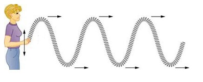

En física, se conoce como onda a la propagación de energía (y no de masa) en el espacio debido a la perturbación de alguna de sus propiedades físicas, como son la densidad, presión, campo eléctrico o campo magnético. Este fenómeno puede darse en un espacio vacío o en uno que contenga materia (aire, agua, tierra, etc.).
Las ondas se producen como consecuencia de oscilaciones y vibraciones de la materia, que se propagan en el tiempo según lo descrito por la Teoría de ondas, la rama de la física encargada de comprender dicho fenómeno, sumamente común en el universo.
De acuerdo al origen de las ondas o de la naturaleza del medio a través del cual se propagan, dependerán los efectos de su aparición y sus características. Así, podemos hablar de ondas de luz, de sonido, etc., cada una con propiedades físicas y frecuencias diferentes, dependiendo, entre otras cosas, del medio en el que se propagan y de cuánta energía transportan.
Algunas ondas, como las sonoras, no pueden transportarse en el vacío, requieren de un medio físico. Otras, como las ondas electromagnéticas, pueden hacerlo perfecta y velozmente: es así como operan los satélites artificiales que reenvían información a la Tierra mediante microondas.
Ondas Transversales:
Ondas transversales son el tipo de onda que generalmente imagina cuando se piensa en una onda. El movimiento del material que constituye la onda es hacia arriba y hacia abajo de modo que a medida que la onda se mueve hacia adelante el material se mueve perpendicular (o transversal) a la dirección en que la onda se mueve. Ejemplos de ondas transversales incluyen ondas en una cuerda y las ondas electromagnéticas. Las ondas en agua pueden ser aproximadamente transversales en algunos casos.
La siguiente simulación muestra un gráfico del movimiento de una ubicación, el círculo rojo, en una cadena que tiene una onda transversal en ella. La ubicación vertical de puntos en la cadena (representados por los círculos) como una función de la ubicación horizontal a lo largo del eje xy el tiempo se describe de nuevo matemáticamente por la función y(x,t) = A sin (kx - ω t + φ) . Nótese que, mientras que la onda se mueve hacia adelante a lo largo de la cadena, el círculo rojo no (de hecho ninguno de los círculos avanza).
Ondas Longitudinales:
Ondas Longitudinales son ondas en el que el movimiento del material en la onda es de ida y vuelta en la misma dirección que la onda se mueve. Ondas de sonido (en el aire y en los sólidos) son ejemplos de ondas longitudinales. Cuando un diapasón o altavoz estéreo vibra se mueve hacia atrás y adelante, creando regiones del aire comprimido (donde la presión es ligeramente superior) y en regiones donde el aire tiene una presión más baja (llamada rarefacción). Estas compresiones y rarefacciones mueven fuera lejos del diapasón a la velocidad del sonido. Cuando llegan a su oído que causan su tímpano en su oîdo a vibrar, y el envío de señales a través del resto del oído al cerebro.
Las ondas longitudinales se pueden describir con las mismas funciones matemáticas como ondas transversales: y(x,t) = A sin (kx - ω t + φ) donde ahora y(x,t) es el horizontal (o longitudinal) desplazamiento del equilibrio en la ubicación x el tiempo t en lugar del desplazamiento vertical del equilibrio. Como fue el caso para las ondas transversales de la velocidad de avance de una onda longitudinal es dada por v = λ/T = ω/k .

Caracteristicas De Las Ondas
1- Perturbación producida por la vibración de un material.
2- Punto más alto de una onda.
3- Punto más bajo de una onda.
4- Distancia entre la altura de una cresta y la línea de equilibrio.